2025年北京市中考数学真题 · 选择题 第6、7、8题 · 对应解析
6. 2025年5月29日，行星探测工程天问二号探测器在西昌卫星发射中心成功发射，开启对近地小行星2016HO3的探测与采样返回之旅．已知该小行星与地球的最近距离约为月球远地点距离的45倍，月球远地点距离约为 ，则该小行星与地球的最近距离约为（ ）
，则该小行星与地球的最近距离约为（ ）
A.  B.
B.  C.
C.  D.
D. 
【答案】C
【解析】
【分析】此题考查了科学记数法表示较大的数．根据题意，小行星与地球的最近距离为月球远地点距离的45倍，月球远地点距离已知为，直接计算两者的乘积并用科学记数法表示即可．
【详解】解：月球远地点距离为，小行星的距离是该值的45倍，即：
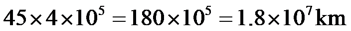
．故选：C
7. 如图， ，点A在射线
，点A在射线 上，以点O为圆心，
上，以点O为圆心， 长为半径画弧，交射线
长为半径画弧，交射线 于点B．若分别以点A，B为圆心，
于点B．若分别以点A，B为圆心， 长为半径画弧，两弧在
长为半径画弧，两弧在 内部交于点C，连接
内部交于点C，连接 ，则
，则 的大小为（ ）
的大小为（ ）
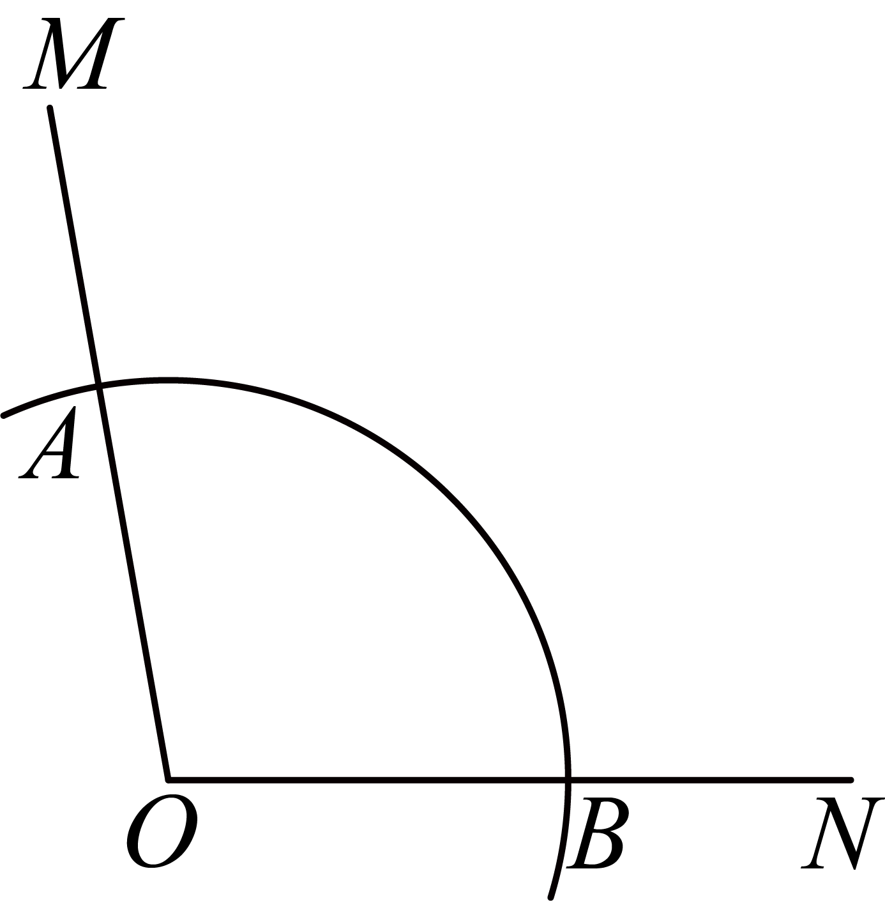
A.  B.
B.  C.
C.  D.
D. 
【答案】B
【解析】
【分析】本题主要考查了全等三角形的判定与性质，等边三角形的判定与性质，三角形内角和定理等知识点，熟练掌握各知识点并灵活运用是解题的关键．
连接
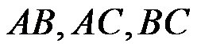
，则由作图可得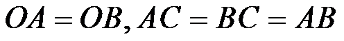
，那么 为等边三角形，可证明
为等边三角形，可证明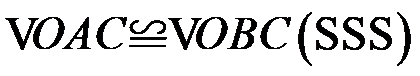
，再根据全等三角形性质以及三角形内角和定理即可求解． 详解】解：如图，连接，
详解】解：如图，连接，
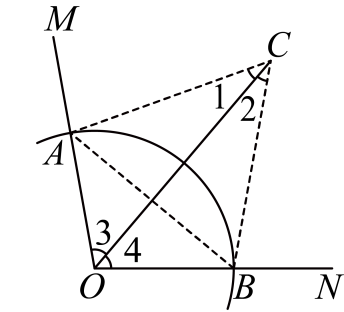
由作图可得，，
∴为等边三角形，
∴
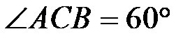
，∵，
∴，
∴
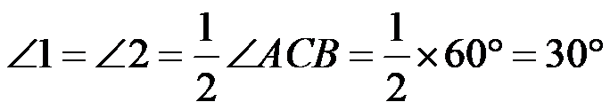
，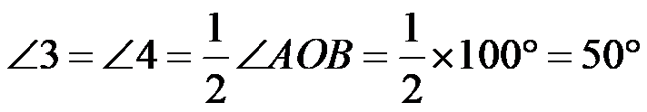
，∴
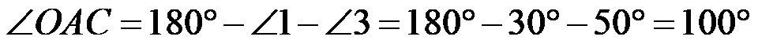
，故选：B．
8. 如图，在平面直角坐标系 中，
中， ，
， 分别是横、纵轴正半轴上的动点，四边形
分别是横、纵轴正半轴上的动点，四边形 是矩形，函数
是矩形，函数 的图象与边交于点
的图象与边交于点 ，与边
，与边 交于点
交于点 （，不重合）．给出下面四个结论：
（，不重合）．给出下面四个结论：
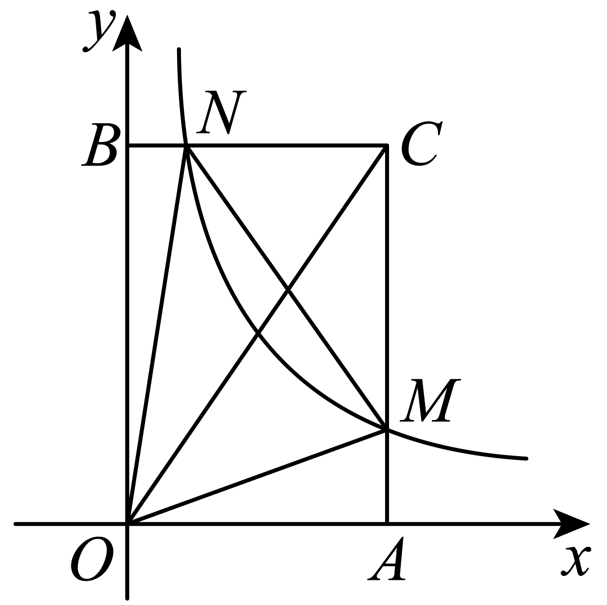
① 与
与 的面积一定相等；
的面积一定相等；
② 与
与 的面积可能相等；
的面积可能相等；
③一定是锐角三角形；
④可能是等边三角形．
上述结论中，所有正确结论的序号是（ ）
A. ①③B. ①④C. ②③D. ②④
【答案】B
【解析】
【分析】本题考查了反比例函数与几何综合，反比例函数的图形和性质，矩形的性质，熟练掌握反比例函数图象的性质是解题的关键．根据矩形的性质结合反比例函数 的意义即可判断①②，根据等边三角形和反比例函数的对称性即可判断④，根据
的意义即可判断①②，根据等边三角形和反比例函数的对称性即可判断④，根据
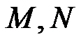
是反比例函数图象上的动点，可得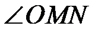
或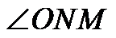
为钝角，即可判断③，即可求解．【详解】解：∵四边形是矩形，
∴
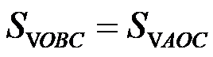
又∵是反比例函数图象上的动点，
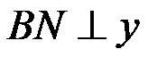
轴，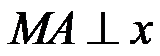
轴，∴
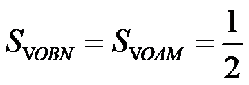
∴
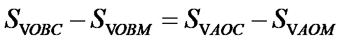
，即与的面积一定相等；故①正确，由①可得
当与的面积相等时，如图，连接，
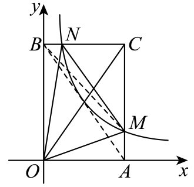
∴
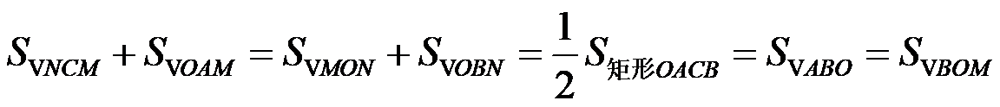
∴在直线 上，则重合，
上，则重合，
∴与的面积不可能相等；
∵等边三角形和反比例函数都是轴对称图形，当对称轴为直线
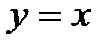
，可能是等边三角形，故④正确．如图
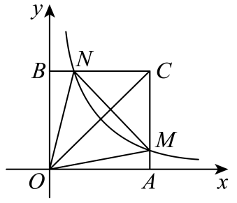
当在的同侧时，可能是钝角三角形，故③错误
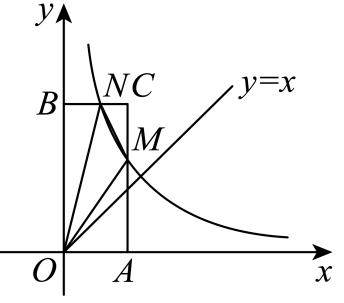
综上，①④正确、②③错误，
故选：B．
第二部分 非选择题
二、填空题（共16分，每题2分）